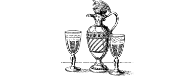

25
You are ushered into a lavish chamber that is hung with Lencian flags and decorated with exotic fineries from the far-flung corners of Magnamund. All around guardsmen stand rigidly to attention, their eyes watchful and unblinking behind their silver visors as you approach the high-backed throne which dominates the centre of the room. There before you sits King Sarnac, his silver-grey hair framing a benign face that is still lean and firm despite advancing years.
‘Welcome, Grand Master,’ he says, as he rises from his throne and offers his hand in friendship. ‘I prayed that you would come to Lencia, to help in the defeat of that cur, Magnaarn, but I did not imagine that you would arrive so soon. You are most welcome.’
Gladly you acknowledge the King’s greeting and, after he has commended and dismissed Lord Floras, you adjourn with him to an antechamber where he tells you about the mission ahead.
‘Latest reports from my spies and scouts in the north say that Magnaarn is presently at his army headquarters in Shugkona. Drakkarim have been seen combing a region of the Tozaz Forest fifty miles to the north of his headquarters. We think that this is where he believes he’ll find the Doomstone of Darke. There are many ancient temples in this area … perhaps one is harbouring that evil gem.’
{kind=link}

The King pauses for a few moments to take some refreshment. From a jewel-encrusted pitcher, he pours two glasses of wine and proffers one to you before continuing. Gratefully you accept and politely you sip the rare vintage whilst listening to the King’s plan of action.
‘Grand Master,’ he says, fixing you with his powerful gaze, ‘if you are to thwart Magnaarn you must travel to Shugkona and seek him out. He must be killed, or failing this, the infernal Doomstone must be destroyed before he can use it against us. Secrecy is paramount if your mission is to succeed; therefore no attempt to approach Shugkona directly can be made. The lines of battle are drawn up to within fifty miles of that stronghold and the region is alive with Drakkarim. Yet there is still one means of approach that the enemy will not be guarding. I have made provision for a boat to take you to a place we call “Bear Rock”. It lies on the River Gourneni and is only thirty miles from Magnaarn’s headquarters. However, there is one complication … to reach the river you must first enter the Hellswamp.’
The thought of venturing into that terrible mire fills you with a cold dread, for the Hellswamp is notoriously perilous. King Sarnac recognizes your apprehension and quickly he tries to assuage your fears.
‘I understand your anxiety, Grand Master, but rest assured that you will not be entering alone. One of my finest officers will be your guide throughout this mission. He has scouted this route before and he knows how to avoid its many dangers. Once you reach Bear Rock he will guide you through the forest to Shugkona. There you must find out where Magnaarn is and do whatever is necessary to foil his quest. Once your mission has been accomplished, my officer will bring you through our battle lines and see you safely back here to Vadera.’
The king reaches for a cord which hangs from a hole in the domed ceiling. He tugs it and a bell tinkles in a distant part of the citadel.
‘Now, Grand Master,’ he says, turning to face the door of the antechamber, ‘the time has come for me to introduce your guide.’
If you took part in the Battle of Cetza in a previous Lone Wolf adventure, 6 turn to 315.
If you have not taken part in this battle, turn to 123.
Footnotes
[6] Only turn to Section 315 if you met Captain Prarg at the Battle of Cetza.